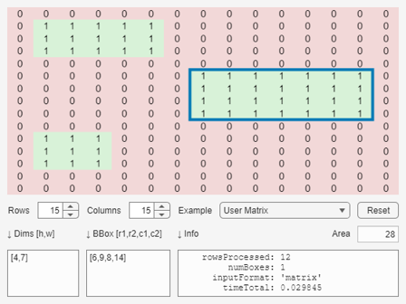

FINDLARGESTBOX2D Examples
The function findLargestBox2D finds the maximum-area axis-aligned rectangle(s) within a 2D boolean mask using a reasonably efficient O(rows*cols) histogram-based algorithm.
The function accepts the mask as a logical matrix, a numeric matrix, a sparse matrix, or as row- and column-index vectors. Optional name-value arguments allow the user to specify the maximum number of matches, as well as limits on the rectangle width(s), height(s) and area(s).
Contents
- Basic Usage: 2D Matrix
- Output 1: bbox -- Bounding Box Indices
- Output 2: dims -- Rectangle Dimensions
- Output 3: area -- Rectangle Area
- Output 4: info -- Information Structure
- Input 1: Sparse Matrix
- Inputs 1 & 2: Index Vectors
- Multiple Rectangles of Equal Largest Area
- Option maxN -- Limit Number of Results
- Options minArea and maxArea -- Area Constraints
- Options minHeight and maxHeight -- Height Constraints
- Options minWidth and maxWidth -- Width Constraints
- Option display -- Show Function Progress
- Options as a Struct
- Empty or No Valid Rectangle
- Performance Comparison Across Input Formats
- Interactive GUI (R2020b or later)
Basic Usage: 2D Matrix
findLargestBox2D accepts a 2D logical or numeric matrix where TRUE/non-zero indicates usable pixels and FALSE/zero indicates blocked pixels. It returns the bounding box of the largest rectangle consisting entirely of TRUE/non-zero pixels.
mask = false(9,9);
mask(2:3, 2:5) = true; % 2x4 = 8
bbox = findLargestBox2D(mask)
bbox =
2 3 2 5
Output 1: bbox -- Bounding Box Indices
The first output bbox is an Nx4 matrix with one row per rectangle found. Its columns are [r1, r2, c1, c2]:
- r1, r2 -- the first and last row indices of the rectangle.
- c1, c2 -- the first and last column indices of the rectangle.
The rectangle spans pixels (r1,c1) to (r2,c2) inclusive. When only one rectangle is found bbox is a 1x4 row vector.
mask(3:5, 3:7) = true; % 3x5 = 15
bbox = findLargestBox2D(mask)
bbox =
3 5 3 7
Output 2: dims -- Rectangle Dimensions
The second output dims is an Nx2 matrix with columns [height,width] giving the pixel dimensions of each rectangle found:
[bbox,dims] = findLargestBox2D(mask)
bbox =
3 5 3 7
dims =
3 5
Output 3: area -- Rectangle Area
The third output area is a scalar equal to height * width of all of the largest rectangle(s):
[bbox,dims,area] = findLargestBox2D(mask)
bbox =
3 5 3 7
dims =
3 5
area =
15
Output 4: info -- Information Structure
The fourth output info is a structure that captures geometry and execution metadata. It contains the following fields:
- info.options -- the resolved option values used.
- info.numBoxes -- the number of rectangles returned.
- info.inputFormat -- 'matrix', 'indices', or 'sparse'.
- info.rowsProcessed -- number of mask rows visited.
- info.timeTotal -- total execution time in seconds.
When at least one rectangle is found, info contains the nested structure array .box with size Nx1, which has the following fields:
- info.box.indices -- [r1,r2,c1,c2] (same as one row of bbox).
- info.box.corners -- fractional pixel-edge coordinates [r1-0.5,r2+0.5,c1-0.5,c2+0.5].
- info.box.diagonal -- the diagonal length (may be fractional).
- info.box.center -- where the diagonals meet (may be fractional).
- info.box.height -- the height in pixels.
- info.box.width -- the width in pixels.
- info.box.area -- the area in pixels.
- info.box.perimeter -- the perimeter length in pixels.
[~,~,~,info] = findLargestBox2D(mask) info.box
info =
struct with fields:
options: [1×1 struct]
rowsProcessed: 4
numBoxes: 1
inputFormat: 'matrix'
box: [1×1 struct]
timeTotal: 0.001584
ans =
struct with fields:
indices: [3 5 3 7]
corners: [2.5 5.5 2.5 7.5]
center: [4 5]
height: 3
width: 5
area: 15
perimeter: 16
diagonal: 5.831
Input 1: Sparse Matrix
For very large but sparsely populated grids, pass a sparse matrix. Any non-zero element is treated as TRUE (usable); zeros are FALSE. The function processes one row at a time, so it never materialises the full dense matrix -- this can give significant memory savings:
mask = sparse(10000, 10000);
mask(1000:1010, 2000:2050) = 1; % 11x51 = 561
[bbox,dims,area] = findLargestBox2D(mask)
bbox =
1000 1010 2000 2050
dims =
11 51
area =
561
Inputs 1 & 2: Index Vectors
Instead of a full matrix, you can supply two vectors of row and column indices of the usable pixels. This is convenient when working with the output of find and avoids constructing a large dense matrix. All four output arguments are identical to the matrix-input form:
[pixR, pixC] = find(mask); [bbox,dims,area] = findLargestBox2D(pixR, pixC)
bbox =
1000 1010 2000 2050
dims =
11 51
area =
561
Multiple Rectangles of Equal Largest Area
When multiple rectangles have the same largest area then by default all N of them are returned. These rectangles may overlap! Output bbox will then have size Nx4 (one row per rectangle), and info.box will be an Nx1 struct array (one element per rectangle).
Here the mask contains two rectangles both with area=20:
mask = false(10, 20); mask(2:5, 2:6) = true; % 4x5 = 20 mask(3:7, 15:18) = true; % 5x4 = 20 [bbox,dims,area,info] = findLargestBox2D(mask)
bbox =
2 5 2 6
3 7 15 18
dims =
4 5
5 4
area =
20
info =
struct with fields:
options: [1×1 struct]
rowsProcessed: 6
numBoxes: 2
inputFormat: 'matrix'
box: [2×1 struct]
timeTotal: 0.0025431
Option maxN -- Limit Number of Results
Use the 'maxN' option to limit the number of rectangles returned. This is useful when you only need the first occurrence, or when memory usage from many duplicates is a concern.
For example, setting maxN=1 returns a maximum of one rectangle:
findLargestBox2D(mask, 'maxN',Inf) % default all findLargestBox2D(mask, 'maxN',1) % 1st rectangle only
ans =
2 5 2 6
3 7 15 18
ans =
2 5 2 6
Options minArea and maxArea -- Area Constraints
'minArea' and 'maxArea' set inclusive bounds on the area (in pixels) of returned rectangles. Note that rectangles may overlap!
mask = false(15,15); mask(2:4, 2:6) = true; % 3x5 = 15 mask(6:9, 8:14) = true; % 4x7 = 28 mask(11:13,2:4) = true; % 3x3 = 9 findLargestBox2D(mask, 'maxArea',10) findLargestBox2D(mask, 'maxArea',20, 'minArea',10)
ans =
2 3 2 6
3 4 2 6
6 7 8 12
6 7 9 13
6 7 10 14
7 8 8 12
7 8 9 13
7 8 10 14
8 9 8 12
8 9 9 13
8 9 10 14
ans =
6 9 8 12
6 9 9 13
6 9 10 14
Options minHeight and maxHeight -- Height Constraints
'minHeight' and 'maxHeight' restrict the number of rows the returned rectangle may span. This is useful when the result must fit a specific aspect ratio or when tall, thin rectangles are undesirable:
findLargestBox2D(mask, 'maxHeight',3) findLargestBox2D(mask, 'minHeight',4)
ans =
6 8 8 14
7 9 8 14
ans =
6 9 8 14
Options minWidth and maxWidth -- Width Constraints
'minWidth' and 'maxWidth' restrict the number of columns the returned rectangle may span. These work symmetrically with the height constraints:
findLargestBox2D(mask, 'maxWidth',3) findLargestBox2D(mask, 'minWidth',6)
ans =
6 9 8 10
6 9 9 11
6 9 10 12
6 9 11 13
6 9 12 14
ans =
6 9 8 14
Option display -- Show Function Progress
The 'display' option accepts one of the following three values:
- 'silent' : no progress display.
- 'waitbar': MATLAB progress bar, with estimated time remaining (ETR).
- 'verbose': prints progress in the command window, with ETR.
Options as a Struct
All options can equivalently be passed as a scalar struct whose field names match the option names (case-insensitive). This is convenient when you want to build options programmatically or share them across multiple calls:
opts = struct('maxN',3, 'maxWidth',3); findLargestBox2D(mask, opts)
ans =
6 9 8 10
6 9 9 11
6 9 10 12
Empty or No Valid Rectangle
If the mask contains no usable pixels, or if no rectangle satisfies the active constraints, the function returns empty arrays for bbox and dims, zero for area, and an info struct without info.box field:
[bbox,dims,area] = findLargestBox2D(mask, 'minArea',99)
bbox =
[]
dims =
[]
area =
0
Performance Comparison Across Input Formats
The three input formats (logical/numeric matrix, index vectors, sparse matrix) can differ substantially in memory use and runtime depending on mask size and density. There is no universally fastest format; the examples below time all three on a 9999x9999 grid with a small usable region so that you can observe the tradeoffs on your own hardware.
All formats must produce identical results -- verified with isequal:
N = 9999; % Logical matrix: maskL = false(N, N); maskL(432:456, 543:567) = true; maskL(8888, 8888) = true; % Index vectors (from meshgrid, to avoid dependence on maskL): [cg, rg] = meshgrid(543:567, 432:456); pixR = [rg(:); 8888]; pixC = [cg(:); 8888]; % Sparse matrix maskS = sparse(pixR, pixC, 1, N, N); % Find rectangles: [bboxL, dimsL, areaL, infoL] = findLargestBox2D(maskL); [bboxI, dimsI, areaI, infoI] = findLargestBox2D(pixR, pixC); [bboxS, dimsS, areaS, infoS] = findLargestBox2D(maskS); isequal(bboxL,bboxI,bboxS) isequal(dimsL,dimsI,dimsS) isequal(areaL,areaI,areaS) fprintf('%8.4f s logical matrix\n', infoL.timeTotal) fprintf('%8.4f s index vectors\n', infoI.timeTotal) fprintf('%8.4f s sparse matrix\n', infoS.timeTotal) %
ans = logical 1 ans = logical 1 ans = logical 1 2.0380 s logical matrix 0.8291 s index vectors 0.8423 s sparse matrix
Interactive GUI (R2020b or later)
Try the interactive GUI: select from some interesting example matrices, toggle values by clicking on the image, and see the rectangles!
findLargestBox2D_GUI(mask)